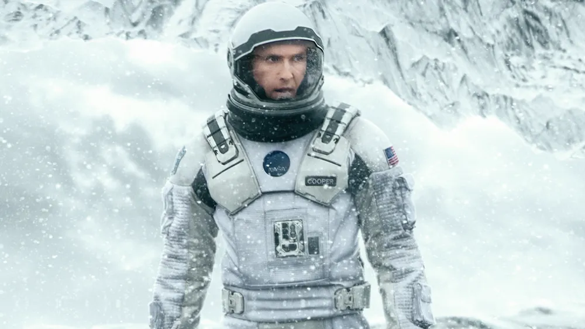

About
Summary"In the future, crop blight has caused civilization to regress into a failing agrarian society. Former NASA pilot Cooper (Matthew McConaughey) runs a farm with his family. Humanity needs more farmers to feed the world & the current scientific thinking believes that NASA Apollo missions were faked to bankrupt the Soviets (a belief that pisses Cooper off like nothing else). Murphy (Mackenzie Foy), Cooper's 10-year-old daughter, believes her room is haunted by a ghost trying to communicate with her. They discover the "ghost" is an unknown intelligence sending coded messages using gravitational waves, leaving binary coordinates in the dust that direct them to a secret NASA installation led by Professor John Brand (Michael Caine). Dr Brand tells Cooper that every year one crop dies & gets eliminated from the planet forever due to change in climatic conditions & severity of the dust storms. Soon, no crop will ever grow on Earth & the species will starve to death. Brand reveals that a wormhole, apparently created by an alien intelligence (& first discovered 48 yrs ago), leads to new planets that may offer hope for survival. NASA's "Lazarus missions" have identified three potentially habitable worlds orbiting the black hole Gargantua: Miller, Edmunds, and Mann, named after the astronauts who surveyed them. Originally 12 astronauts were sent to 12 different worlds. Their craft had hibernation capabilities through which the astronauts could live on for decades & wait to be rescued after transmitting habitat data back to Earth. But if the planet was assessed to be uninhabitable, there was no plan for rescue as Earth did not have the resources to again visit all 12 planets. Brand recruits Cooper to pilot the spacecraft Endurance to recover the astronauts' data from the 3 planets; if one of the planets is habitable, humanity will follow on space stations. But Brand has still not solved the problem of lifting enough of Humanity into space & to the identified planet. So plan B is to population bomb the identified planet with human embryos. The Endurance will carry 5000 human embryos, of which 10 will be incubated & once they grow up, they will be artificially inseminated so as to create a colony of 100s of humans in a few decades. On Endurance, Cooper joins Brand's daughter, bio-technologist Amelia (Anne Hathaway) (& Brand's daughter); scientists Romilly (David Gyasi) and Doyle (Wes Bentley); and robots TARS and CASE. Amelia tells Cooper that Mann was the leader of the expedition that took 12 brave people to uncharted territory. Amelia has great respect for Mann. They enter the wormhole and head to Miller (as the meager data provided by the respective explorers puts Miller's planet as the best option), but discover the planet is so close to Gargantua that it experiences severe gravitational time dilation: each hour on the surface is seven years on Earth. A team descends to the planet, which proves inhospitable as it is covered by a shallow ocean roiled by enormous tidal waves. As Amelia attempts to recover Miller's data, a wave hits, killing Doyle and delaying the shuttle's departure. When the others return to Endurance, 23 years have passed. Murphy is now grown up & is working with Dr Brand (who is now very old) in solving the gravity equation that is the key to lifting the humanity off Earth in an attempt to recolonize another planet, as per Plan A..." Click here to view the full summary on IMDb |
|

|